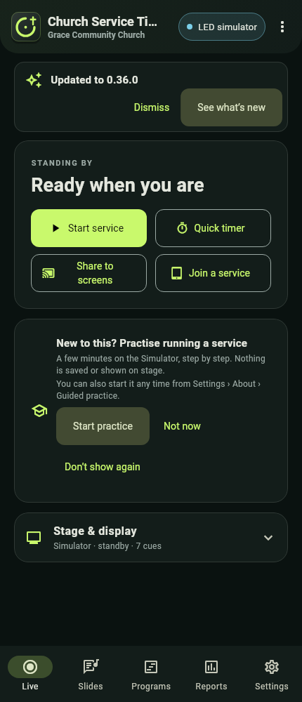

The app runs on phones and tablets with Android 7.0 or later.
- On the phone, open the download page and download the file ending in
.apk. From 0.35.0, the lines under each release's notes say which file is for Android and which is for Windows, and how to install each. - Open the downloaded file. Android asks whether to allow installs from your browser or file manager; allow it for this install.
- Open Church Service Timer. It starts on Live with the LED simulator, so nothing reaches a real stage until you choose a display.
- Check the version in Settings › About. This guide describes 0.37.0. An earlier version does not have what the release notes list under 0.37.0, so update it first.
Allow what the app asks for
The app asks for each of these only when it is needed. The first three protect warnings during a service.
| Android asks | Why it matters |
|---|---|
| Notifications | Shows warnings on the phone, and the lock-screen card with the countdown, Pause and Next. |
| Precise timing | Lets a warning arrive at its exact second. |
| Battery optimisation | Stops Android pausing warnings while the screen is off. Ready for service shows a Battery row with Allow. |
| Nearby devices or location | Lets the app find and rejoin the LED sign's Wi-Fi. |
| Camera | Only for Scan QR code instead when joining a service. |
Settle these before the service, not during it. Live › ⋮ › Ready for service lists anything still outstanding.
Keep every device on the same version
Update every phone, tablet and PC your team uses together.
- Program files, backups and sent programs saved by 0.28 or later cannot be opened by 0.27 or earlier.
- A backup or program file made by 0.34 needs 0.34 or later to open if it holds any of the new cue settings: a screen colour, a banner, Wrap long text, its own screen speed, one of the new effects, long text with Flash or Pulse, or more than six cues. The cues a new install starts with use several of these.
- A backup or program file in which a program, or the default, is set to end on the Clock needs 0.35 or later to open. Earlier versions need an end screen and refuse the file. Programs and backups you already have are unchanged.
- Nothing in 0.37.0 changes programs or backups, so earlier versions can open the same files.
- The new stage looks need 0.37.0 on the screen as well as on the host (see What a stage screen looks like). A paired phone or tablet still on 0.36.0 or earlier shows the plain clock, not the flip clock, and, set to Up next only, it shows the segment name under the timer. A web screen always matches the app. A new screen with an older host shows the flip clock in white on black, with its own day and date.
- A paired phone or tablet still on an earlier version shows every cue in white and full screen, at the LED sign's speed, with the new effects as steady text and the next segment's name without its speaker and length.
Check for updates
Settings › About › Check for updates asks GitHub whether a newer version has been published. It checks when you tap the row, and sends nothing about you or your church. It never checks by itself unless you switch on Check for updates automatically, described below.
| The row says | What to do |
|---|---|
| You have the latest version | Nothing. |
| Version … is available | Tap Open the download page, download the .apk and install as above. A phone or tablet never downloads or installs an update by itself. The version you have keeps working, so update when it suits you, not during a service. |
| Could not check. This device may be offline. | Try again with an internet connection. The app itself never needs the internet to run a service. |
A test (beta) version, such as 0.36.0-beta.1, is never offered as an update. You will not see one unless you were given it on purpose; if you are running one, you are still offered the real version that follows it.
Installing a newer version over the old one keeps your programs, reports and settings. Export a backup first all the same; see Protect data and manage the LED device.
Check for updates automatically
Under Check for updates is a switch, Check for updates automatically. It is off to begin with, so the app contacts GitHub only when you ask.

With the switch on:
- The app makes the same check by itself, at most once a day: about 30 seconds after it opens, and again when it comes back to standing by.
- It never checks during a service, a Quick timer, a rehearsal, guided practice or Check this service, while the controls are locked, or on a device that has joined another device's service.
- When a newer version has been published, Live shows a small notice while standing by, such as "Version 0.36.0 is available".
- If the check cannot reach GitHub it says nothing and tries again the next day. Tapping Check for updates still says when it could not check.

| On the notice | What it does |
|---|---|
| See update | Opens Check for updates, after the Settings PIN if one is set. From there you update as described above. |
| Not now | Hides the notice for that version. A newer version shows it again. |
Nothing is downloaded or installed without asking. The notice only tells you; you still choose when to update. It never shows during a service, on a stage screen, on the second screen or in full screen. The switch, and what the last check found, are kept on that phone, tablet or PC, and are not part of backups or program files.
After you update
The first time the app opens on a newer version, Live shows a small notice while standing by: Updated to 0.36.0.


| On the notice | What it does |
|---|---|
| See what's new | Opens the What's new page, after the Settings PIN if one is set. |
| Dismiss | Hides the notice. |
- It shows once for each version. Opening it or dismissing it counts as seen.
- A new install shows nothing. So does going back to an older version.
- It stays out of the way. It never shows during a service, a Quick timer, a rehearsal, guided practice or Check this service, with the controls locked, while joined to another device's service, or on a stage screen, the second screen or full screen. If a service is running when the app starts, it waits for the next time the app is standing by.
- If a newer version is also available, that notice shows first, and this one after it is dismissed.
- Which version you last saw is kept on that device only, not in backups or program files. Nothing is sent anywhere.